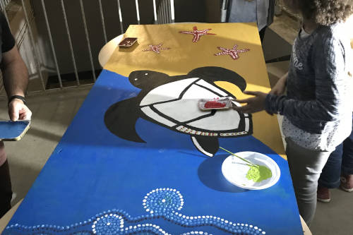

Les créations 2019
Création D'une chanson
L'atelier "création d'une chanson" propose aux élèves de créer une chanson. En effet, les élèves ont été attirés par cet atelier animé par madame Agnès pour de multiples raisons. En particulier le fait d'avoir la possibilité de créer sa proche chanson. Une élève a déclaré "Cet atelier est intéressant car il nous permet de créer quelque chose qui sort de nous". Ces élèves ont donc eu la fierté de créer leur musique grâce aux nombreux instruments à disposition et au soutien d'une professeur de musique. De plus, les élèves ont reçu un cours de chant, afin de découvrir leur voix et ont pu tester divers instruments. Alors cette intervention fut extrêmement enrichissante pour eux.
Au commencement était le verbe
Cette intervention animée par une professeur de français, madame Ganuchaud fut une intervention portant sur le travail de l'éloquence. Premièrement les élèves ont fait des exercices d'articulation pour s'échauffer et prendre confiance. Puis ils se sont entraînés à exprimer de manière théâtrale un discours oral. Ainsi, dans la bonne humeur et les rires les élèves ont pu performer à l'oral. Par exemple, une élève a déclaré "J'ai choisi l'atelier éloquence car il me paraît important de savoir s'exprimer de manière convaincante et claire. Être capable de maîtriser sa voix et son discours permet de se sentir plus à l'aise à l'oral."
Danse africaine et peinture corporelle
L'atelier de la danse africaine fut le plus rempli. C'est Thierno, danseur professionnel qui a donné des cours de danse africaine aux élèves. Les danseurs ont donc pu découvrir dans la rigolade une nouvelle danse pleine de dynamisme et une nouvelle culture à travers cette dernière. De plus, le voyage vers l'Afrique ne se limite pas seulement là. Les danseurs ont aussi eut la chance d'être ornés de peintures faciales colorées et pailletées, les transportant d'autant plus vers l'Afrique.
Peinture
Dans cet atelier, les élèves ont pu exprimer leur libre créativité artistique. Grâce aux conseils avisés d'un artiste, les élèves ont fait de la peinture, particulièrement de l'art abstrait. Ainsi, cet atelier leur a permis de progresser dans le domaine technique de la peinture et de s'évader dans l'art le temps d'une nuit.
Mots détournés pour poèmes kamikazes
Cet atelier a permis aux élèves d'exprimer encore une fois leur créativité et leur art, mais cette fois avec leur plume. Ils ont ainsi manié les mots et ont exprimé leur lyrisme grâce à un intervenant connaisseur. D'autant plus que ces élèves ne furent que deux, elles ont donc pu avoir une sorte de cours particulier de poésie !
Créer le site web de la nuit de la création
Dans cet atelier, les élèves sont partis à la découverte de la face cachée des sites web. Ainsi, ils sont partis à l'assaut des algorithmes pour créer le site web de la nuit de la création, que vous lisez actuellement. Ils sont donc partis faire le tour des ateliers pour interviewer ces derniers afin de pouvoir rédiger leurs comptes-rendus.
Atelier développement durable

Dans cet atelier, les élèves ont pu réaliser une illustration des dangers des matières plastiques pour les animaux marins. À partir d'une tortue aborigène et de matériaux de récupération, les élèves ont représenté la destruction du milieu marin.
Cuisine créative
Les élèves pour cet atelier se sont mis en cuisine et ont sorti les tabliers. Sereinement accompagnés d'un cuisinier du lycée, ils ont préparé en petit comité des puits d'amour et des verrines au caramel. Ainsi, tous les participants de la nuit de la création ont eu la chance de déguster toutes ces merveilleuses patisseries. Les élèves ont donc eu la chance d'améliorer leurs compétences en cuisine, et de satisfaire les papilles d'un grand nombre d'entre nous !